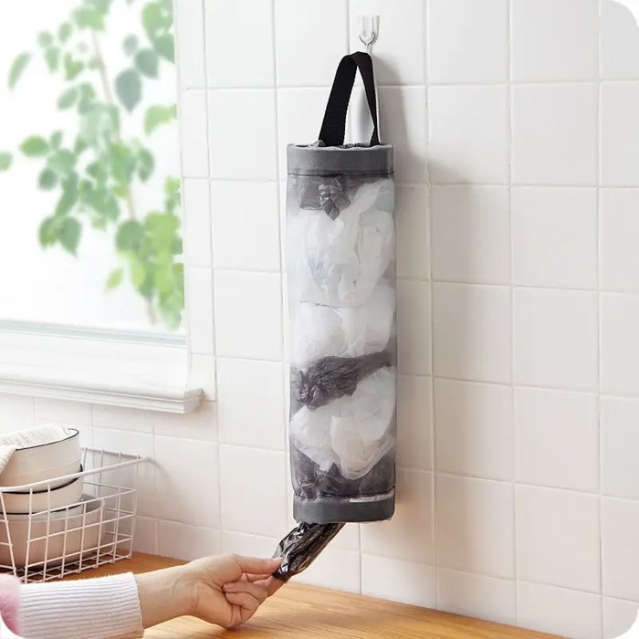

NICHT FREIGEGEBENER PRODUKTENTWURF
Keine eBay-Veröffentlichung. Fehlende Dokumente und Prüfpunkte bleiben offen. Versand und Gewinn sind nur Kalkulationswerte, keine Checkout-/Gewinnbestätigung.
AliExpress: 1005004970036864

• Umwelt freundliches Material : Diese Aufbewahrung tasche aus umwelt freundlichem Polyester bietet eine nachhaltige Lösung für Ihr Küchen abfall management. • Wand montage Design : Das an der Wand montierte Design dieser Aufbewahrung tasche spart nicht nur Platz, sondern verleiht Ihrer Küche auch einen Hauch von modernem Komfort. • 3D-Muster : Das drei dimensionale Muster auf der Aufbewahrung tasche verleiht Ihrem Küchen dekor einen einzigartigen ästhetischen Reiz und macht es zu einer stilvollen Ergänzung. • Vielseitiger Einsatz : Diese Aufbewahrung tasche ist vielseitig einsetzbar und eignet sich zur Aufbewahrung von Küchen müll, wieder verwendeten Aufbewahrung beuteln oder anderen kleinen Gegenständen. Dies macht sie zu einem praktischen Haushalts gegenstand. • Haltbare Dicke : Mit einer Dicke von 2,5 Drähten ist diese Aufbewahrung tasche langlebig und langlebig, um sicher zustellen, dass sie schweren Gegenständen standhält. • Einfacher Zugang : Das Design dieser Aufbewahrung tasche ermöglicht einen einfachen Zugang und Komfort und ist damit eine praktische Wahl für den täglichen Gebrauch. Merkmale: Hängendes Design, leere Plastiktüten Einfach zu bedienen, ordentlich und ordentlich Verschleiß fest, langlebig und verformung beständig Sauber und ordentlich, nicht leicht zu erden, Veredelung Oben, unten ziehen, doppelte Öffnung Förderlich für die Veredelung, bequem für den sekundären Gebrauch Spezifikationen: Artikel kategorie: Aufbewahrung tasche Material: Nylon Gewicht: 20g (ca. 5g Fehler) Farbe: grau Paket einges ch lossen: 1 * Aufbewahrung tasche Anmerkung: 1. Bitte erlauben Sie 1-3 cm unter scheidet sich aufgrund der manuellen Messung. 2. Aufgrund der unterschied lichen Anzeige und des unterschied lichen Lichts zeigt das Bild möglicher weise nicht die tatsächliche Farbe des Artikels an. Vielen Dank für Ihr Verständnis
| Merkmal | Mehrfachverwendungen |
|---|---|
| Material | POLYESTER |
| Ursprung | CN (Herkunft) |
| CN | Zhejiang |
| Funktion | Wiederverwendbar |
| Geeigneter Raum | Küche |
| Merkmal | Umweltfreundlich |
| Form | Oval |
| Dicke | 2,5 draht |
| Mustertyp | Dreidimensionaler Typ |
| Verwendung | Mehrzweck |
| Typ | Lagerung Taschen |
| Form | Kleidungsaufhängungsart/Aufhängungsart |
| Choice | yes |
| SKU | Quelloptionen | Bestand | Quellpreis EUR | Versandprognose EUR | Verkaufspreisprognose EUR |
|---|---|---|---|---|---|
| 12000037011085900 | {"Farbe": "1 Stück Schwarz"} | 26 | 2.05 | 1.99 | 22.99 |
| 12000037011085899 | {"Farbe": "1 Stück Gelb"} | 10 | 2.35 | nicht verifiziert | nicht berechnet |
Breite, Höhe, Länge, Produktart